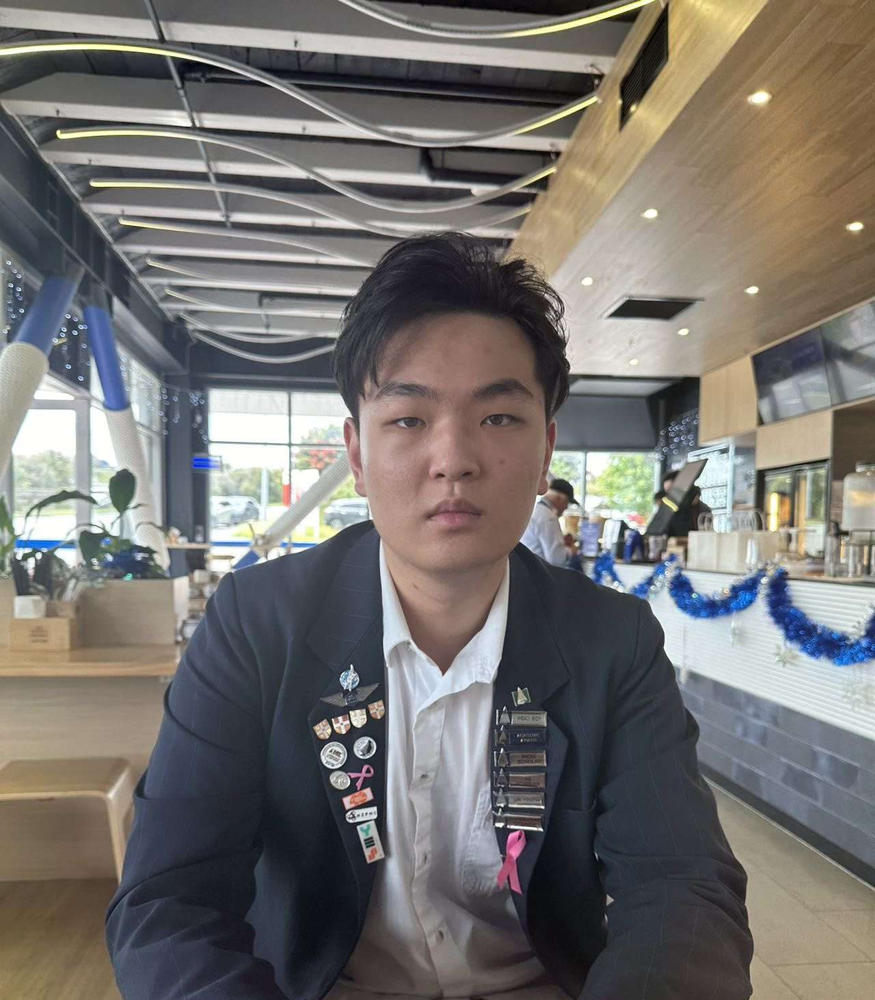

Co-Founder, Editorial manager
“In mathematics, the art of asking questions is more valuable than solving problems.” — Georg Cantor.
Mathematics as taught in schools has a strong emphasis on prescribed methods of solving problems. However, it is my experiences exchanging ideas and pondering with fellow mathematicians (especially the vibrant community around Maths Olympiad), that has truly gotten me hooked to maths.
Maths is one of the strongest forms of logical reasoning, but its logical nature is something that enables creativity instead of limiting it. Each technique presented should act as an extension of mathematical inquiry, and each maths problem should inspire a new way of thinking.
One of our goals is to spark curiosity for aspiring mathematicians regardless of their background by creating a resources that dive into many captivating areas of maths. So far we’ve definitely enjoyed the process of creating and experimenting with different mediums of communicating maths. I hope that students of maths who see our work may learn something new and be challenged by our mathematical puzzles (as desired!), and in doing so, become more skilled at the art of problem solving.